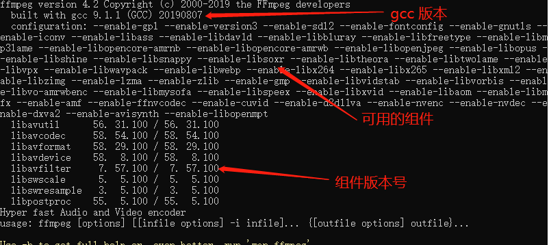

首先，建议使用Ubuntu20版本安装wine，因为新版wine使用了libfaudio这个library，而Ubuntu18是没有内置这个library的，当然这并不是最重要的，重要的是Ubuntu18安装这个library超级麻烦，根据wine官方的wiki去安装，根本无法安装成功，当然真要较真安装，也能装上，前提是你不怕浪费生命- -
如果你的部分软件（如驱动）依赖固定版本内核，可以锁定内核版本后升级，这样系统升级但是内核版本会保留不变
前段时间，想写一些东西
一来分享下和记录下自己的学习过程，防止后面忘记，权当是笔记了
二来也是想督促下自己，不要懈怠，要保持学习的心态，提升自己，虽不见得立刻有用，但积累一些东西，总归没坏处不是
坚持了半个月吧，每天学习东西，不管是C也好，还是计算机的知识也罢，总归是没有停下来
然而，上周最后两天，公司举办年会，没法继续保持了
到了今天，墨墨迹迹了大半天，到现在也没有真正下决心开始学习
虽然是因为在忙工作的事情，但是闲下来时还是想上网摸鱼，工作并不是借口
但是最终，还是决定继续保持学习的心态，打败懒惰，也是有感而发，写几句话。
在ffmpeg中，添加水印需要用overlay滤镜，这是一个复杂滤镜，因为它需要两个输入，默认第一个输入是主画面，第二输入为水印，先执行一个简单的看看。
下面有两个文件，一个是可爱的大雄兔，一个是可爱的doggie，咱们就把doggie加到大雄兔上面去
执行命令ffmpeg -hide_banner -i big_buck_bunny.mp4 -i doggie2.png -filter_complex "overlay=x=0:y=0" out.mp4 -y
在ffmpeg的滤镜中，有简单滤镜（simple filter）和复杂滤镜（complex filter）两种。
使用简单滤镜时，用-vf选项，使用复杂滤镜时，使用-filter_complex或-lavfi。
那么什么时候用简单滤镜，什么时候用复杂滤镜？
其实很简单：是否只有一个输入文件和一个输出文件，如果是，用简单滤镜，否，则应该用复杂滤镜
执行一个命令试试ffmpeg -hide_banne...
ffmpeg默认就会输出一些日志，包含编译的工具（gcc版本）、可用的组件（–enable-xxxx）、组件版本号码，如下图
